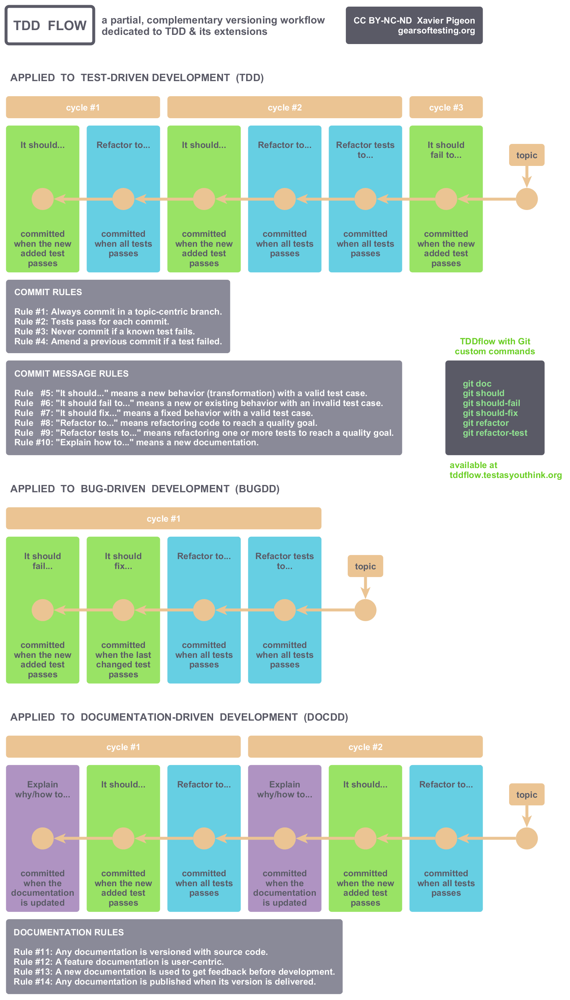

TDDFLOW
Versioning with Test-Driven Development
Less
TDDflow with Git
bootstrap responsive templates

Use it
TDDflow with Git
Use Git commands to simply practice TDDflow at home.
© Copyright 2018-2019 Xavier Pigeon - All Rights Reserved